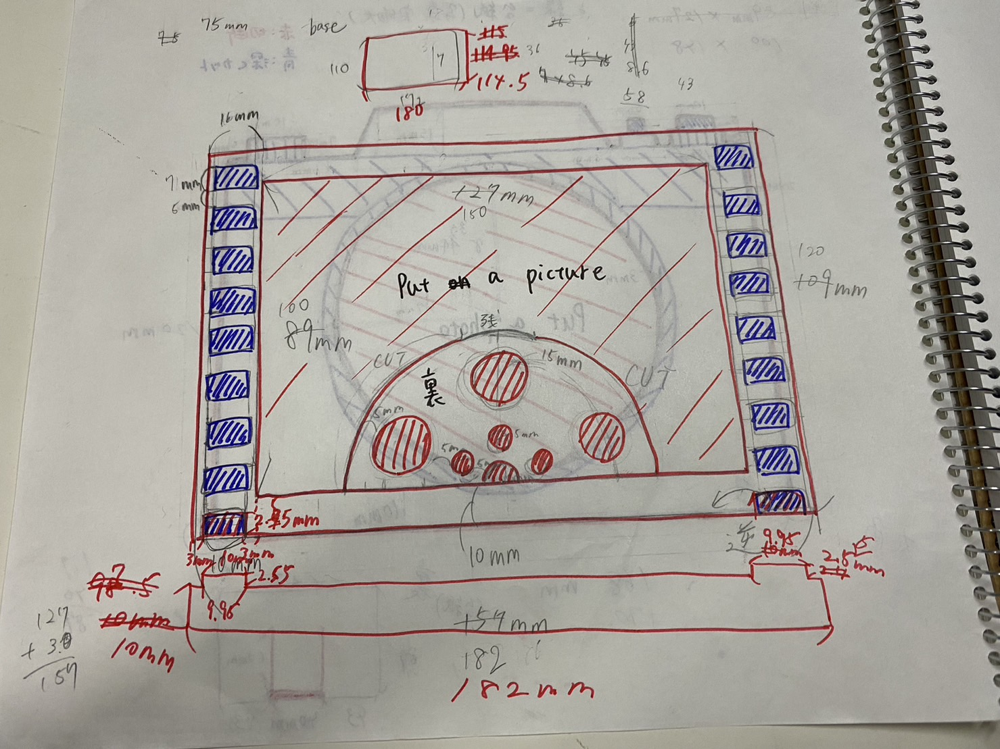
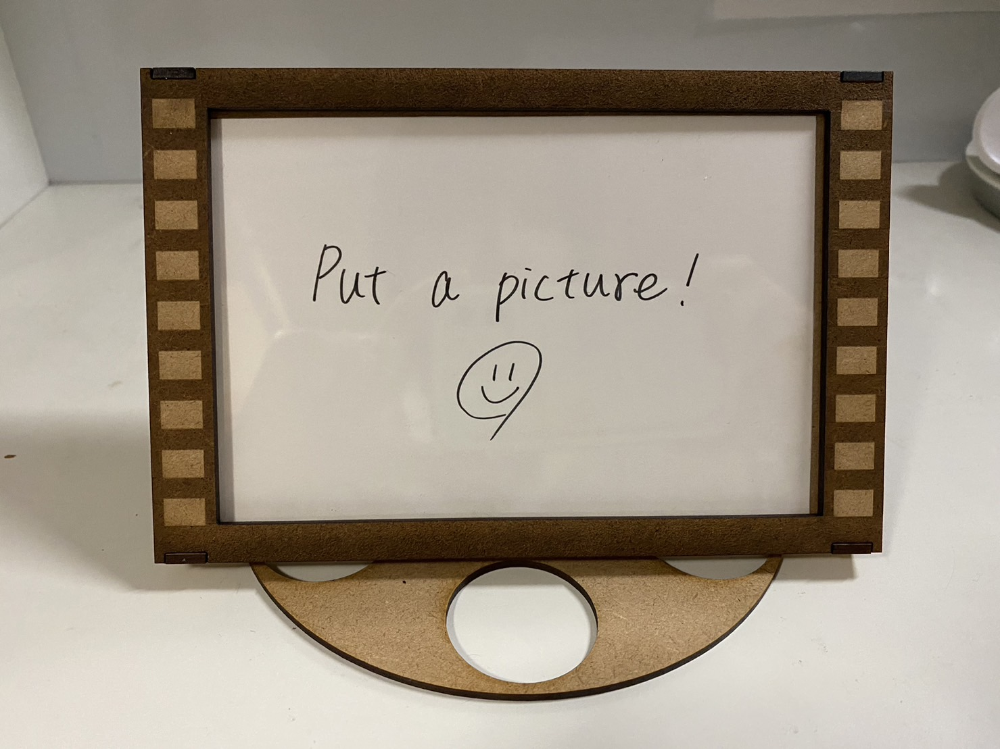
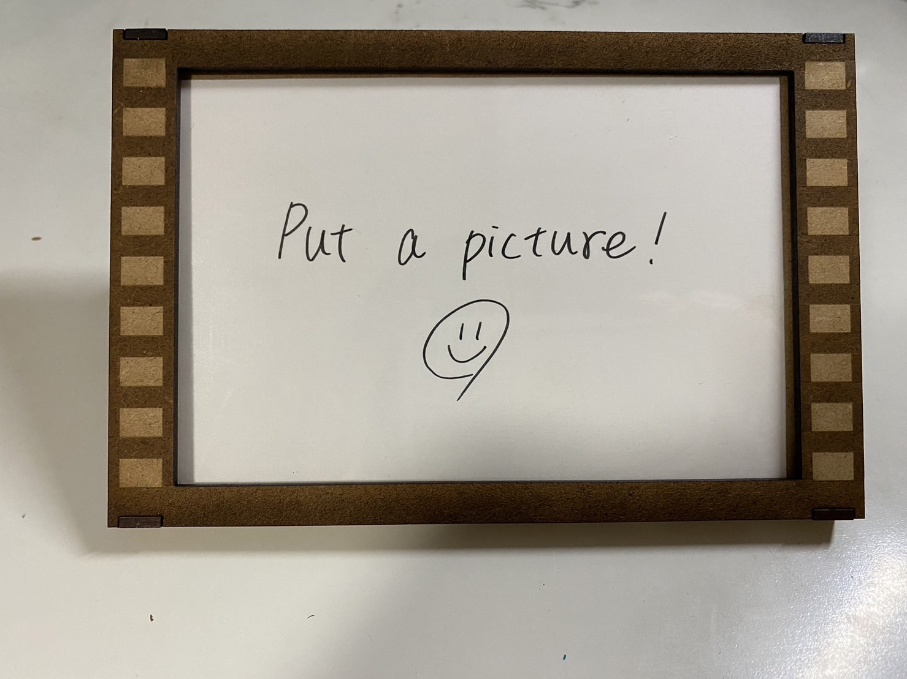

フィルム風写真立て
スケッチ

実物

左:うしろ 右:各パーツ



角度の調節が可能。
使用動画
フィルム風写真立て【デジファブ】【レーザー加工】
設計ファイル
説明
写真を映画のワンカットに、というコンセプトで制作した。スタンドをフィルムリワインダーの形にする、実物の黒い部分を削るなど細部まで再現にこだわった。
製作当初は一般的な写真立てのように台紙にスタンドをそのまま付ける予定だったが、形的に難しかったためスタンドを別に作った。そのおかげで写真の角度を自由に調整できるようになった。
溝を作って分解・組み立てが可能になるように設計したが、溝の大きさのミスではまらなかったため接着剤を使用した。留め具は輪ゴムで代用。
反省・感想
設計ミスや失敗が多かったけれど、作りたかった形に近づけることができた。設計から組み立てまで楽しく製作できた。
構造やサイズの確認が甘く作り直すことになってしまったため、今回の反省を活かして早い段階から慎重に製作の計画を立てていきたい。